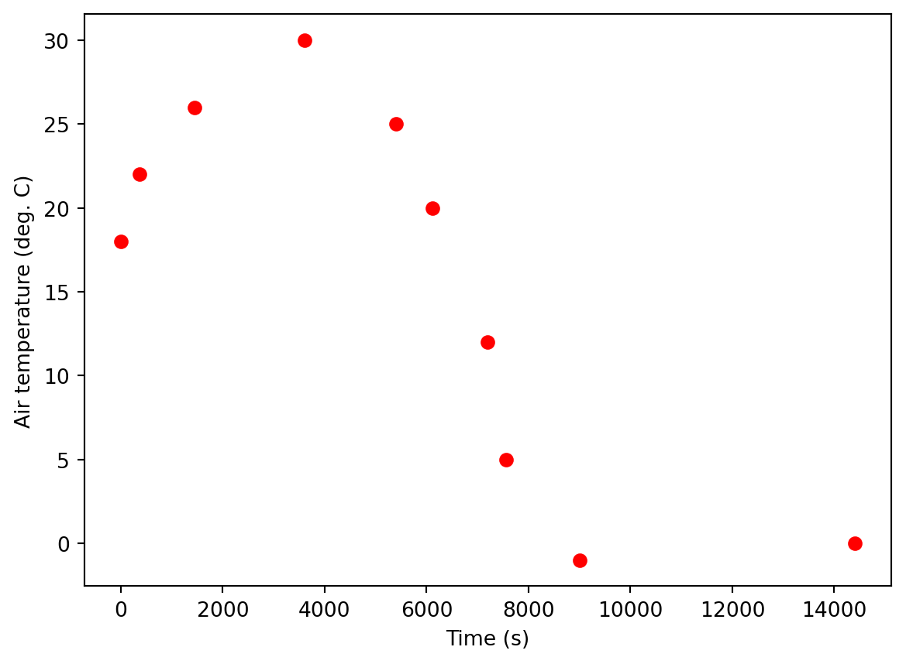
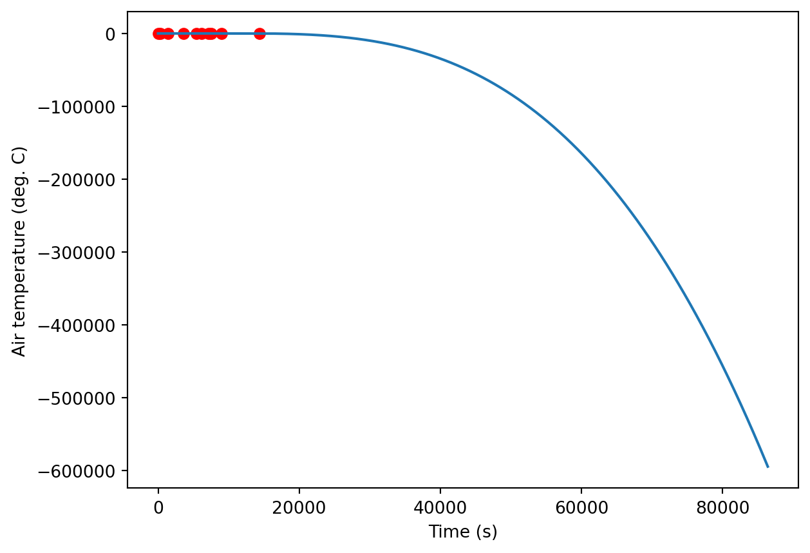
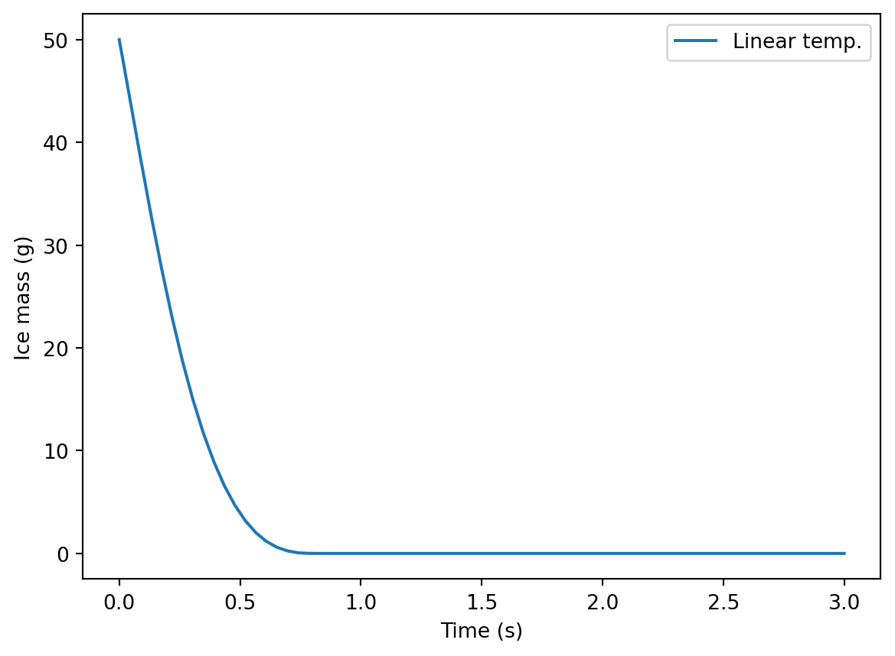
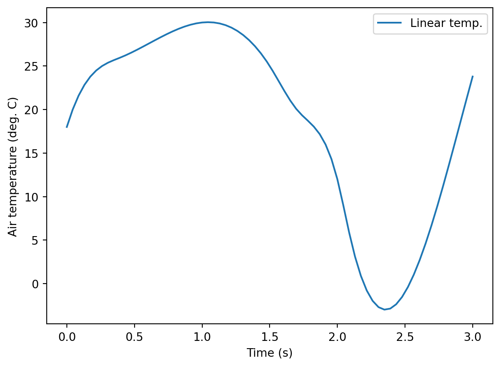

Some of the simple models presented as examples in this book or described in the problems could be solved analytically. In a sense, the those models didn’t really make use of the capabilities of solve_ivp(). But how about when model inputs are not constant? It’s easy to think of examples:
benzene volatilization when temperature (Henry’s law constant) and wind speed (mass transfer coefficient) vary,
microbial growth with changing pH, or
melting ice with changing ambient temperature.
Here an analytical solution is impossible. But a numerical approach works well, as long as care is taken in how the time-variable inputs enter the model.
10.1 Interpolation
We’ll use the ice melting model from an earlier problem in a demo.
Let’s say we have some measured temperature data that look like these:
import pandas as pdimport matplotlib.pyplot as pltmeas_temp = pd.read_csv('data/air_temp.csv')meas_temp.time = meas_temp.time *3600plt.plot(meas_temp.time, meas_temp.temp, 'ro')plt.xlabel('Time (s)')plt.ylabel('Air temperature (deg. C)')

We cannot just send those multiple discrete temperature values into our model function. Inside it, the rates() function needs to be able to access a temperature value for any time. We have to figure out the Python code for making that happen. The solution is interpolation. We create a Python interpolation function based on the measurements. Then when rates() needs a temperature, it can call the function.
Let’s start with some interpolation outside of the model. We’ll use the interpl1d() function from the interpolate module in the scipy library.
The result is a function, not any specific values.
air_temp_func
<scipy.interpolate._bsplines.BSpline at 0x1f82624d6a0>
To use it, it needs some x values (time here).
air_temp_func(0)
array(18.)
air_temp_func(5000)
array(27.31375942)
To see what the function does, we can call it with some high-resolution input and plot results.
import numpy as nptimes = np.arange(0, 86400+60, 60)
import matplotlib.pyplot as pltplt.plot(meas_temp.time, meas_temp.temp, 'ro')plt.plot(times, air_temp_func(times))plt.xlabel('Time (s)')plt.ylabel('Air temperature (deg. C)')

The function created by the make_interp_spline() function is smooth–we do not have any kinks or corners at the points. Linear interpolation is an alternative, but ODE solvers tend to struggle with these responses.
10.2 Building the model function
Here is a new model function
def meltv(mass_0, air_temp_dat, h, times, dens =920, temp_freeze =0, Hf =333000 ): """ Dynamic model for heat transfer to a melting block of ice, with disappearance of the ice over time. This version accepts time- variable air temperature. Parameters ---------- mass_0 : float Initial mass of ice (kg) air_temp : DataFrame Air temperature over time as a Pandas DataFrame with columns `time` (s) and `temp` (deg. C) h : float Convection heat transfer coefficient (W/m2-K) times : list or tuple or array time in output (s) dens : float Ice density (kg/m3) temp_freeze : float Freezing point (deg. C) Hf : float Heat of fusion (J/kg) Returns ------- dictionary With elements 't' for time (s) and 'm' for ice mass remaining (kg) """# Make function for air temperature air_temp_func = make_interp_spline(air_temp_dat.time, air_temp_dat.temp)# Define rates functiondef rates(t, mass_t):if mass_t <0: mass_t =0# Get current air temperature (deg. C) air_temp = air_temp_func(t)# Get current exposed upper area, assuming hemisphere area =2* np.pi * (3* mass_t / (2* np.pi * dens))**(2/3)# Heat flow (W) Q = area * h * (air_temp - temp_freeze)# Melting rate (kg/s) dmdt =-Q / Hfreturn dmdt res = solve_ivp( rates, t_span = [min(times), max(times)], y0 = [mass_0], t_eval = times )# Calculate temperature for output as well air_temp_t = air_temp_func(times)# Return user-friendly results object (dictionary here) out = {"time": res.t, "air_temp": air_temp_t,"ice_mass": res.y[0, :] }
Let’s try it.
from importlib importreloadimport syssys.path.append('modules')# Our moduleimport ice_mods as imreload(im)
<module 'ice_mods' from 'C:\\Users\\au277187\\OneDrive - Aarhus universitet\\Documents\\GitHub\\AU-BCE-EE\\modeling-py-book\\modules\\ice_mods.py'>
pred01 = im.meltv( mass_0 =0.050, air_temp_dat = meas_temp, h =120, times =3600* np.linspace(0, 3, 70),)
Plot predictions
plt.plot(pred01["time"] /3600, 1000* pred01["ice_mass"], label="Linear temp.")plt.xlabel("Time (s)")plt.ylabel("Ice mass (g)")plt.legend()

plt.plot(pred01["time"] /3600, pred01["air_temp"], label="Linear temp.")plt.xlabel("Time (s)")plt.ylabel("Air temperature (deg. C)")plt.legend()

Problems
Working with the wastewater lagoon polishing model (see module in this subdirectory), make the reaction rate constant time-variable. Test your model by comparing OM predictions for the middle of the lagoon from the original with a constant rate and the a rate that varies 10x every 24 hours.
Note that in the melting ice demo it was an input variable that we varied, while here it is a model parameter. But the same concepts and programming applies.
If you have trouble seeing a difference, shorten the model run time and make sure you use a high resolution.